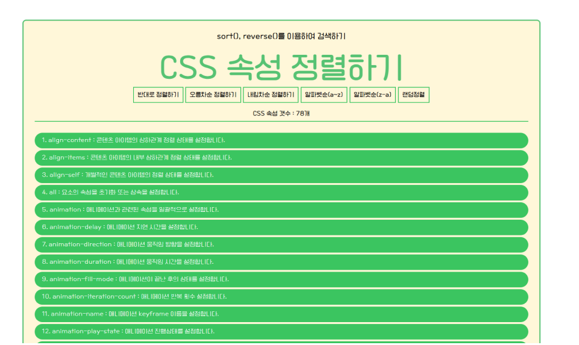

skill
VSC | JavaScript
HTML | CSS
JSON | Git

indexOf()/search() , include() 를 이용해서 css의 속성 및 타입을 검색 할 수 있고, charAt() 를 이용해서 첫 글자가 A로 시작하는 css의 속성을 검색 할 수 있고, find() 를 이용해서 나열된 CSS를 클릭하면 CSS의 속성이 나오도록 구현하고, filter()를 이용해서 CSS의 사용도에 따라 분류할수 있도록 해보았습니다. 그리고, sort(), reverse() 를 이용해서 오름차순, 내림차순 정렬과 알파벳 순으로 정렬되도록 해보면서, 이렇게 “CSS의 종류가 많이 있구나”라는 생각을 하게되었습니다.
code view
skill를 이용하여 만든 소스를 깃을 통해 볼 수 있습니다.
site view
깃에 올린 파일을 직접 볼 수 있습니다.